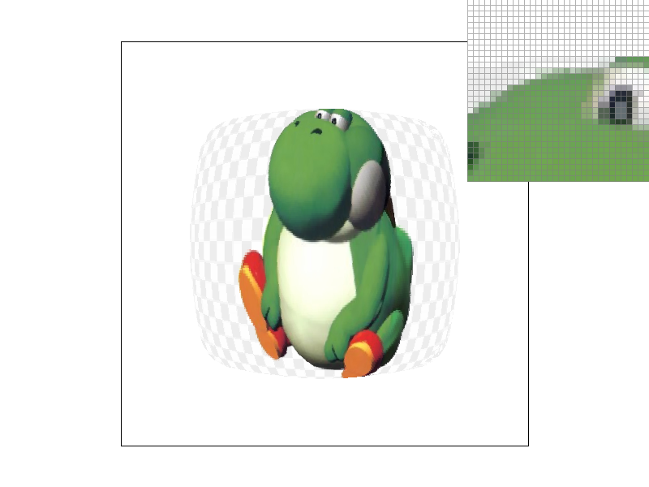

Task 6: "Level sampling" with mipmaps for texture mapping
In this task, we have to implement level sampling to the pixel sampling algorithm from task 5.
Level sampling works by sampling from different levels, or resolutions. These different resolutions are stored in a something called a mipmap. We use the mipmap to sample at lower resolution for higher frequencies.
-
`rasterize_textured_triangle`
I implemented level sampling by additionally finding the barycentric coordinates for the sample point's neighbors. These neighbor barycentric coordinates are used to calculate the level in the `get_level` function. These neighbor barycentric coordinates are first used to find the rate of change of u and v in respect to x and y respectively. This is so that we know which level in the mipmap to use. Larger derivatives result in larger level values and therefore lower resolutions. This is implemented in `get_level`.
-
`get_level`
We use the derivatives mentioned above and using the level calculation in lecture to find the level.
-
`sample`
Once we find which level to sample from, we can either use the two methods from before: nearest or bilinear interpolation. With nearest level, L_NEAREST, we use the nearest level to sample from. With L_LINEAR, we take two levels above and below the level returned by `get_level` and interpolate them.
With level sampling implemented, we can have in total 3 level sampling methods and 2 pixel sampling methods.

|
|
|

|
|
This is for the first row of images. On the left image, if we focus on the edge as well as the eye, we can see that there is better antialiasing in L_ZERO and P_LINEAR. As mentioned eariler in the task 5 section, this is because P_NEAREST does not do interpolation like P_LINEAR and only takes one point from the texture. Therefore, we see some staircases/jaggies in the left image whereas in the right image, the staircases/jaggies are antialiased.
This is for the last row of images. In the left image, because we used L_NEAREST instead of level 0, we can sample at lower resolutions which is why we don't see staircases unlike the left image using L_ZERO. Similar to how there is interpolation for P_LINEAR, there is also interpolation for L_LINEAR but instead with levels which is why there is much better antialiasing for the right image.
With everything implemented, we can discuss the tradeoffs between speed, memory usage, and antialiasing power between supersampling, pixel sampling, and level sampling. Supersampling is a powerful antialising technique; however, it requires more memory to store the higher resolution image. It is also computationally more intensive due to the number of increased number of samples per pixel. Pixel sampling is not as effective compared to supersampling especially for high frequency pixels. It sacrifices some antialiasing power. Because of this and because it does not sample subpixels, it requires less computational power and no additional memory. Level sampling antialiasing power is more of a balance of supersampling and pixel sampling in that it precomputes multiple texture resolutions and stores them in a mipmap and utilizes them to reduce aliasing across different viewing distances. Therefore, it is better aliasing power without having to worry about needing more computational power at the expense of requiring additional memory for the mipmap.
Screenshot of Yoshi using L_LINEAR and P_LINEAR at sample rate = 16 and resolution 800x800